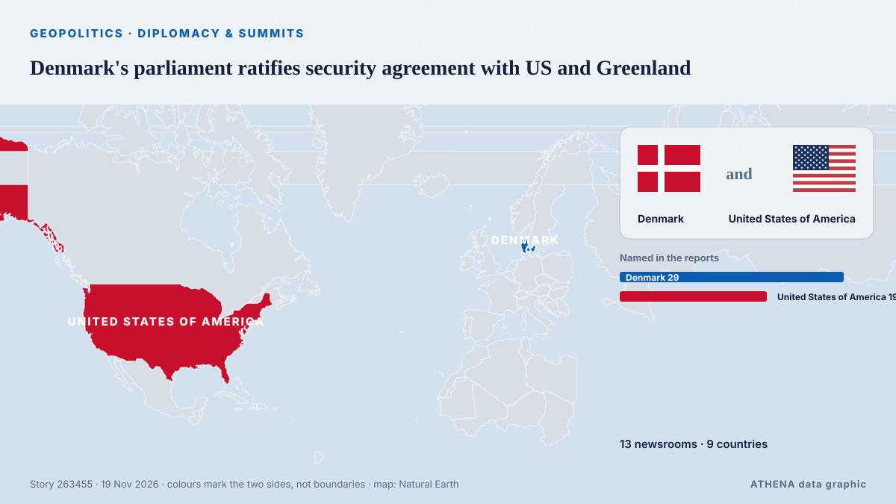

Denmark's parliament ratifies security agreement with US and Greenland

Denmark's parliament on Thursday voted to ratify the security agreement signed in September with the United States and Greenland, easing tensions over US President Donald Trump's desire to annex the… from The Local Denmark
Reported independently by 13 outlets in 9 countries since 8 Jan, first by The Local Denmark; coverage is fading. ATHENA rates the risk low (1.1/10), driven mainly by the severity of the harm described and the quality of the evidence. Confidence is 91% (high), with 13 independent outlets corroborating it and an average source reliability of 75%. Outlets by country: Denmark (3), Singapore (3), United States (3). Coverage: 8 Jan to 19 Nov, 16319 hours.
Why it matters: Security and diplomatic developments can shift alliances, trade and markets well beyond the countries directly involved.
What changed: 12 new reports from 12 outlets in the 24 hours to 19 Nov.
First reported as: Denmark expected to ratify Trump deal over Greenland on Nov 19
AutomatedSelected, grouped and scored by ATHENA's published method from 12 independent outlets. The headline is the outlet's own; ATHENA's sentences follow fixed patterns - no generative AI writes them. How it works →
How to read this page
- What you are reading
- 13 outlets in 9 countries reported this event. The reports below are listed in the order they appeared; each headline opens the original article. ATHENA writes none of the reports.
- Our reading
- For the record — The reports describe a completed, domestic, commercial or personal matter. We list it so you can see who reported it and when. We are not tracking a risk of wider conflict here.
- How much evidence
- Fair Several independent outlets agree, but the picture could still change.
After repeats, off-topic items and stale reports are removed, 12 of the 15 listed reports are counted; 100% of the headlines match the event.
- What this does not mean
- ATHENA measures how an event is reported, not whether it is true. This is not a forecast, a judgement on who is right, or advice.
- What would change it
- Reports from other independent outlets showing a different development, or a firm confirmation or denial from an official source.
Reading R2 · refreshed with every update of this page. ATHENA has not yet published a track record for these readings; when it does, it will be linked here.
At a glance
Selected, scored and written by ATHENA's published methodology. No editor intervenes in individual events. How this is produced ›
| 08 Jan 15:18 UTC | 1 |
|---|---|
| 10 Jan 15:18 UTC | 0 |
| 12 Jan 15:18 UTC | 0 |
| 14 Jan 15:18 UTC | 0 |
| 16 Jan 15:18 UTC | 0 |
| 18 Jan 15:18 UTC | 0 |
| 20 Jan 15:18 UTC | 0 |
| 22 Jan 15:18 UTC | 0 |
| 24 Jan 15:18 UTC | 0 |
| 26 Jan 15:18 UTC | 0 |
| 28 Jan 15:18 UTC | 0 |
| 30 Jan 15:18 UTC | 0 |
| 01 Feb 15:18 UTC | 0 |
| 03 Feb 15:18 UTC | 0 |
| 05 Feb 15:18 UTC | 0 |
| 07 Feb 15:18 UTC | 0 |
| 09 Feb 15:18 UTC | 0 |
| 11 Feb 15:18 UTC | 0 |
| 13 Feb 15:18 UTC | 0 |
| 15 Feb 15:18 UTC | 0 |
| 17 Feb 15:18 UTC | 0 |
| 19 Feb 15:18 UTC | 0 |
| 21 Feb 15:18 UTC | 0 |
| 23 Feb 15:18 UTC | 0 |
| 25 Feb 15:18 UTC | 0 |
| 27 Feb 15:18 UTC | 0 |
| 01 Mar 15:18 UTC | 0 |
| 03 Mar 15:18 UTC | 0 |
| 05 Mar 15:18 UTC | 0 |
| 07 Mar 15:18 UTC | 0 |
| 09 Mar 15:18 UTC | 0 |
| 11 Mar 15:18 UTC | 0 |
| 13 Mar 15:18 UTC | 0 |
| 15 Mar 15:18 UTC | 0 |
| 17 Mar 15:18 UTC | 0 |
| 19 Mar 15:18 UTC | 0 |
| 21 Mar 15:18 UTC | 0 |
| 23 Mar 15:18 UTC | 0 |
| 25 Mar 15:18 UTC | 0 |
| 27 Mar 15:18 UTC | 0 |
| 29 Mar 15:18 UTC | 0 |
| 31 Mar 15:18 UTC | 0 |
| 02 Apr 15:18 UTC | 0 |
| 04 Apr 15:18 UTC | 0 |
| 06 Apr 15:18 UTC | 0 |
| 08 Apr 15:18 UTC | 0 |
| 10 Apr 15:18 UTC | 0 |
| 12 Apr 15:18 UTC | 0 |
| 14 Apr 15:18 UTC | 0 |
| 16 Apr 15:18 UTC | 0 |
| 18 Apr 15:18 UTC | 0 |
| 20 Apr 15:18 UTC | 0 |
| 22 Apr 15:18 UTC | 0 |
| 24 Apr 15:18 UTC | 0 |
| 26 Apr 15:18 UTC | 0 |
| 28 Apr 15:18 UTC | 0 |
| 30 Apr 15:18 UTC | 0 |
| 02 May 15:18 UTC | 0 |
| 04 May 15:18 UTC | 0 |
| 06 May 15:18 UTC | 0 |
| 08 May 15:18 UTC | 0 |
| 10 May 15:18 UTC | 0 |
| 12 May 15:18 UTC | 0 |
| 14 May 15:18 UTC | 0 |
| 16 May 15:18 UTC | 0 |
| 18 May 15:18 UTC | 0 |
| 20 May 15:18 UTC | 0 |
| 22 May 15:18 UTC | 0 |
| 24 May 15:18 UTC | 0 |
| 26 May 15:18 UTC | 0 |
| 28 May 15:18 UTC | 0 |
| 30 May 15:18 UTC | 0 |
| 01 Jun 15:18 UTC | 0 |
| 03 Jun 15:18 UTC | 0 |
| 05 Jun 15:18 UTC | 0 |
| 07 Jun 15:18 UTC | 0 |
| 09 Jun 15:18 UTC | 0 |
| 11 Jun 15:18 UTC | 0 |
| 13 Jun 15:18 UTC | 0 |
| 15 Jun 15:18 UTC | 0 |
| 17 Jun 15:18 UTC | 0 |
| 19 Jun 15:18 UTC | 0 |
| 21 Jun 15:18 UTC | 0 |
| 23 Jun 15:18 UTC | 0 |
| 25 Jun 15:18 UTC | 0 |
| 27 Jun 15:18 UTC | 0 |
| 29 Jun 15:18 UTC | 0 |
| 01 Jul 15:18 UTC | 0 |
| 03 Jul 15:18 UTC | 0 |
| 05 Jul 15:18 UTC | 0 |
| 07 Jul 15:18 UTC | 0 |
| 09 Jul 15:18 UTC | 0 |
| 11 Jul 15:18 UTC | 0 |
| 13 Jul 15:18 UTC | 0 |
| 15 Jul 15:18 UTC | 0 |
| 17 Jul 15:18 UTC | 0 |
| 19 Jul 15:18 UTC | 0 |
| 21 Jul 15:18 UTC | 0 |
| 23 Jul 15:18 UTC | 0 |
| 25 Jul 15:18 UTC | 0 |
| 27 Jul 15:18 UTC | 0 |
| 29 Jul 15:18 UTC | 0 |
| 31 Jul 15:18 UTC | 0 |
| 02 Aug 15:18 UTC | 0 |
| 04 Aug 15:18 UTC | 0 |
| 06 Aug 15:18 UTC | 0 |
| 08 Aug 15:18 UTC | 0 |
| 10 Aug 15:18 UTC | 0 |
| 12 Aug 15:18 UTC | 0 |
| 14 Aug 15:18 UTC | 0 |
| 16 Aug 15:18 UTC | 0 |
| 18 Aug 15:18 UTC | 0 |
| 20 Aug 15:18 UTC | 0 |
| 22 Aug 15:18 UTC | 0 |
| 24 Aug 15:18 UTC | 0 |
| 26 Aug 15:18 UTC | 0 |
| 28 Aug 15:18 UTC | 0 |
| 30 Aug 15:18 UTC | 0 |
| 01 Sep 15:18 UTC | 0 |
| 03 Sep 15:18 UTC | 0 |
| 05 Sep 15:18 UTC | 0 |
| 07 Sep 15:18 UTC | 0 |
| 09 Sep 15:18 UTC | 0 |
| 11 Sep 15:18 UTC | 0 |
| 13 Sep 15:18 UTC | 0 |
| 15 Sep 15:18 UTC | 0 |
| 17 Sep 15:18 UTC | 0 |
| 19 Sep 15:18 UTC | 0 |
| 21 Sep 15:18 UTC | 0 |
| 23 Sep 15:18 UTC | 0 |
| 25 Sep 15:18 UTC | 0 |
| 27 Sep 15:18 UTC | 0 |
| 29 Sep 15:18 UTC | 0 |
| 01 Oct 15:18 UTC | 0 |
| 03 Oct 15:18 UTC | 0 |
| 05 Oct 15:18 UTC | 0 |
| 07 Oct 15:18 UTC | 0 |
| 09 Oct 15:18 UTC | 0 |
| 11 Oct 15:18 UTC | 0 |
| 13 Oct 15:18 UTC | 0 |
| 15 Oct 15:18 UTC | 0 |
| 17 Oct 15:18 UTC | 0 |
| 19 Oct 15:18 UTC | 0 |
| 21 Oct 15:18 UTC | 0 |
| 23 Oct 15:18 UTC | 0 |
| 25 Oct 15:18 UTC | 0 |
| 27 Oct 15:18 UTC | 0 |
| 29 Oct 15:18 UTC | 0 |
| 31 Oct 15:18 UTC | 0 |
| 02 Nov 15:18 UTC | 0 |
| 04 Nov 15:18 UTC | 0 |
| 06 Nov 15:18 UTC | 0 |
| 08 Nov 15:18 UTC | 0 |
| 10 Nov 15:18 UTC | 0 |
| 12 Nov 15:18 UTC | 0 |
| 14 Nov 15:18 UTC | 0 |
| 16 Nov 15:18 UTC | 0 |
| 18 Nov 15:18 UTC | 0 |
| 20 Nov 15:18 UTC | 0 |
| 22 Nov 15:18 UTC | 0 |
| 24 Nov 15:18 UTC | 0 |
| 26 Nov 15:18 UTC | 0 |
| 28 Nov 15:18 UTC | 0 |
| 30 Nov 15:18 UTC | 0 |
| 02 Dec 15:18 UTC | 0 |
| 04 Dec 15:18 UTC | 0 |
| 06 Dec 15:18 UTC | 0 |
| 08 Dec 15:18 UTC | 0 |
| 10 Dec 15:18 UTC | 0 |
| 12 Dec 15:18 UTC | 0 |
| 14 Dec 15:18 UTC | 0 |
| 16 Dec 15:18 UTC | 0 |
| 18 Dec 15:18 UTC | 0 |
| 20 Dec 15:18 UTC | 0 |
| 22 Dec 15:18 UTC | 0 |
| 24 Dec 15:18 UTC | 0 |
| 26 Dec 15:18 UTC | 0 |
| 28 Dec 15:18 UTC | 0 |
| 30 Dec 15:18 UTC | 0 |
| 01 Jan 15:18 UTC | 0 |
| 03 Jan 15:18 UTC | 0 |
| 05 Jan 15:18 UTC | 0 |
| 07 Jan 15:18 UTC | 0 |
| 09 Jan 15:18 UTC | 0 |
| 11 Jan 15:18 UTC | 0 |
| 13 Jan 15:18 UTC | 0 |
| 15 Jan 15:18 UTC | 0 |
| 17 Jan 15:18 UTC | 0 |
| 19 Jan 15:18 UTC | 0 |
| 21 Jan 15:18 UTC | 0 |
| 23 Jan 15:18 UTC | 0 |
| 25 Jan 15:18 UTC | 0 |
| 27 Jan 15:18 UTC | 0 |
| 29 Jan 15:18 UTC | 0 |
| 31 Jan 15:18 UTC | 0 |
| 02 Feb 15:18 UTC | 0 |
| 04 Feb 15:18 UTC | 0 |
| 06 Feb 15:18 UTC | 0 |
| 08 Feb 15:18 UTC | 0 |
| 10 Feb 15:18 UTC | 0 |
| 12 Feb 15:18 UTC | 0 |
| 14 Feb 15:18 UTC | 0 |
| 16 Feb 15:18 UTC | 0 |
| 18 Feb 15:18 UTC | 0 |
| 20 Feb 15:18 UTC | 0 |
| 22 Feb 15:18 UTC | 0 |
| 24 Feb 15:18 UTC | 0 |
| 26 Feb 15:18 UTC | 0 |
| 28 Feb 15:18 UTC | 0 |
| 02 Mar 15:18 UTC | 0 |
| 04 Mar 15:18 UTC | 0 |
| 06 Mar 15:18 UTC | 0 |
| 08 Mar 15:18 UTC | 0 |
| 10 Mar 15:18 UTC | 0 |
| 12 Mar 15:18 UTC | 0 |
| 14 Mar 15:18 UTC | 0 |
| 16 Mar 15:18 UTC | 0 |
| 18 Mar 15:18 UTC | 0 |
| 20 Mar 15:18 UTC | 0 |
| 22 Mar 15:18 UTC | 0 |
| 24 Mar 15:18 UTC | 0 |
| 26 Mar 15:18 UTC | 0 |
| 28 Mar 15:18 UTC | 0 |
| 30 Mar 15:18 UTC | 0 |
| 01 Apr 15:18 UTC | 0 |
| 03 Apr 15:18 UTC | 0 |
| 05 Apr 15:18 UTC | 0 |
| 07 Apr 15:18 UTC | 0 |
| 09 Apr 15:18 UTC | 0 |
| 11 Apr 15:18 UTC | 0 |
| 13 Apr 15:18 UTC | 0 |
| 15 Apr 15:18 UTC | 0 |
| 17 Apr 15:18 UTC | 0 |
| 19 Apr 15:18 UTC | 0 |
| 21 Apr 15:18 UTC | 0 |
| 23 Apr 15:18 UTC | 0 |
| 25 Apr 15:18 UTC | 0 |
| 27 Apr 15:18 UTC | 0 |
| 29 Apr 15:18 UTC | 0 |
| 01 May 15:18 UTC | 0 |
| 03 May 15:18 UTC | 0 |
| 05 May 15:18 UTC | 0 |
| 07 May 15:18 UTC | 0 |
| 09 May 15:18 UTC | 0 |
| 11 May 15:18 UTC | 0 |
| 13 May 15:18 UTC | 0 |
| 15 May 15:18 UTC | 0 |
| 17 May 15:18 UTC | 0 |
| 19 May 15:18 UTC | 0 |
| 21 May 15:18 UTC | 0 |
| 23 May 15:18 UTC | 0 |
| 25 May 15:18 UTC | 0 |
| 27 May 15:18 UTC | 0 |
| 29 May 15:18 UTC | 0 |
| 31 May 15:18 UTC | 0 |
| 02 Jun 15:18 UTC | 0 |
| 04 Jun 15:18 UTC | 0 |
| 06 Jun 15:18 UTC | 0 |
| 08 Jun 15:18 UTC | 0 |
| 10 Jun 15:18 UTC | 0 |
| 12 Jun 15:18 UTC | 0 |
| 14 Jun 15:18 UTC | 0 |
| 16 Jun 15:18 UTC | 0 |
| 18 Jun 15:18 UTC | 0 |
| 20 Jun 15:18 UTC | 0 |
| 22 Jun 15:18 UTC | 0 |
| 24 Jun 15:18 UTC | 0 |
| 26 Jun 15:18 UTC | 0 |
| 28 Jun 15:18 UTC | 0 |
| 30 Jun 15:18 UTC | 0 |
| 02 Jul 15:18 UTC | 0 |
| 04 Jul 15:18 UTC | 0 |
| 06 Jul 15:18 UTC | 0 |
| 08 Jul 15:18 UTC | 0 |
| 10 Jul 15:18 UTC | 0 |
| 12 Jul 15:18 UTC | 0 |
| 14 Jul 15:18 UTC | 0 |
| 16 Jul 15:18 UTC | 0 |
| 18 Jul 15:18 UTC | 0 |
| 20 Jul 15:18 UTC | 0 |
| 22 Jul 15:18 UTC | 0 |
| 24 Jul 15:18 UTC | 0 |
| 26 Jul 15:18 UTC | 0 |
| 28 Jul 15:18 UTC | 0 |
| 30 Jul 15:18 UTC | 0 |
| 01 Aug 15:18 UTC | 0 |
| 03 Aug 15:18 UTC | 0 |
| 05 Aug 15:18 UTC | 0 |
| 07 Aug 15:18 UTC | 0 |
| 09 Aug 15:18 UTC | 0 |
| 11 Aug 15:18 UTC | 0 |
| 13 Aug 15:18 UTC | 0 |
| 15 Aug 15:18 UTC | 0 |
| 17 Aug 15:18 UTC | 0 |
| 19 Aug 15:18 UTC | 0 |
| 21 Aug 15:18 UTC | 0 |
| 23 Aug 15:18 UTC | 0 |
| 25 Aug 15:18 UTC | 0 |
| 27 Aug 15:18 UTC | 0 |
| 29 Aug 15:18 UTC | 0 |
| 31 Aug 15:18 UTC | 0 |
| 02 Sep 15:18 UTC | 0 |
| 04 Sep 15:18 UTC | 0 |
| 06 Sep 15:18 UTC | 0 |
| 08 Sep 15:18 UTC | 0 |
| 10 Sep 15:18 UTC | 0 |
| 12 Sep 15:18 UTC | 0 |
| 14 Sep 15:18 UTC | 0 |
| 16 Sep 15:18 UTC | 0 |
| 18 Sep 15:18 UTC | 0 |
| 20 Sep 15:18 UTC | 0 |
| 22 Sep 15:18 UTC | 0 |
| 24 Sep 15:18 UTC | 0 |
| 26 Sep 15:18 UTC | 0 |
| 28 Sep 15:18 UTC | 0 |
| 30 Sep 15:18 UTC | 0 |
| 02 Oct 15:18 UTC | 0 |
| 04 Oct 15:18 UTC | 0 |
| 06 Oct 15:18 UTC | 0 |
| 08 Oct 15:18 UTC | 0 |
| 10 Oct 15:18 UTC | 0 |
| 12 Oct 15:18 UTC | 0 |
| 14 Oct 15:18 UTC | 0 |
| 16 Oct 15:18 UTC | 0 |
| 18 Oct 15:18 UTC | 0 |
| 20 Oct 15:18 UTC | 0 |
| 22 Oct 15:18 UTC | 0 |
| 24 Oct 15:18 UTC | 0 |
| 26 Oct 15:18 UTC | 0 |
| 28 Oct 15:18 UTC | 0 |
| 30 Oct 15:18 UTC | 0 |
| 01 Nov 15:18 UTC | 0 |
| 03 Nov 15:18 UTC | 0 |
| 05 Nov 15:18 UTC | 0 |
| 07 Nov 15:18 UTC | 0 |
| 09 Nov 15:18 UTC | 0 |
| 11 Nov 15:18 UTC | 0 |
| 13 Nov 15:18 UTC | 0 |
| 15 Nov 15:18 UTC | 2 |
| 17 Nov 15:18 UTC | 12 |
| 19 Nov 05:55 UTC | 0.0 |
|---|---|
| 19 Nov 11:54 UTC | 0.6 |
| 19 Nov 14:02 UTC | 1.1 |
Why these numbers
Importance
Risk
Confidence
The reporting — who reported it, and when
headline as published · opens the original- The Local Denmark · DenmarkEXPLAINER: Why is Greenland a part of the Danish Kingdom?
- The Straits Times · SingaporeGreenland’s ‘fatherless’ sue Denmark
- The Local Denmark · DenmarkGreenland's 'fatherless' sue the Danish state
- The Straits Times · SingaporeDenmark ratifies Trump deal over Greenland
- RTÉ News · IrelandDanish parliament ratifies Trump deal over Greenland
- CNA (Channel NewsAsia) · SingaporeDenmark expected to ratify Trump deal over Greenland on Nov 19
- Times of India · IndiaDenmark buckles under Trump, approves US military expansion deal in Greenland
- The Local Denmark · DenmarkDenmark's parliament ratifies security agreement with US and Greenland
- DW English · GermanyDenmark ratifies security deal with US and Greenland
- Le Monde (English) · FranceDenmark's parliament ratifies security agreement with US, Greenland
- Al Jazeera English · QatarDenmark parliament approves security deal with Greenland and US
- CBS News (World) · United StatesDanish lawmakers OK Greenland security deal with U.S.
- The Independent · United KingdomDenmark’s government just unanimously sealed a Greenland deal with Trump
- CNBC World · United StatesDenmark ratifies Trump security deal over Greenland after months of diplomatic tensions
- ABC News (International) · United StatesDenmark approves security deal with US and Greenland, seeking to finally ease tensions with Trump